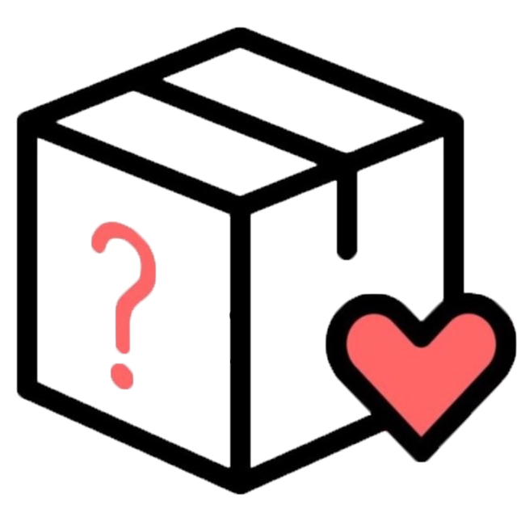
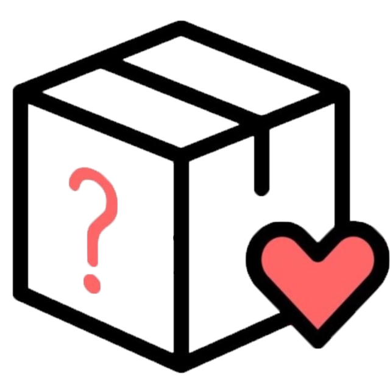

가챠(がちゃ or ガチャ
문방구에서 흔히 보이는 뽑기기계를 말한다,한국에서는 이걸 랜덤박스로 부르고 있다.
but 흔히 많은 사람들이 가챠의 시작은 일본이 원조라고 생각을 하고 있다. 하지만 가챠의 시작은 미국에서 부터 시작이 되었다.
gacha > 정보

가챠(がちゃ or ガチャ
문방구에서 흔히 보이는 뽑기기계를 말한다,한국에서는 이걸 랜덤박스로 부르고 있다.
but 흔히 많은 사람들이 가챠의 시작은 일본이 원조라고 생각을 하고 있다. 하지만 가챠의 시작은 미국에서 부터 시작이 되었다.
온라인상에서 이루어지는 랜덤박스
상장깡, 퍼즐맞추기
오프라인상에서 이루어지는
인형뽑기, 캡슐뽑기, 제일복권(일정한 가격으로 그 이상 이하을 굿즈를 얻을수 있는 오프라인 랜덤박스)
이런한 종류들을 모으고 좋아하는 사람들을 흔히 덕후라고 부른다.
주요 사람들이 모으는 종류는 런피규어, 프라모델, 토미카, 브릭베어 등이 있다.